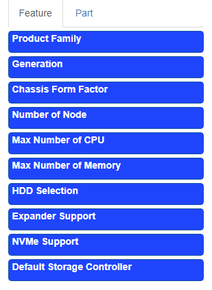
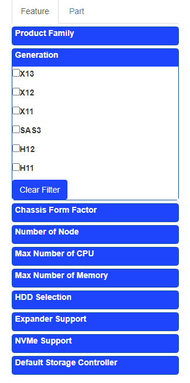
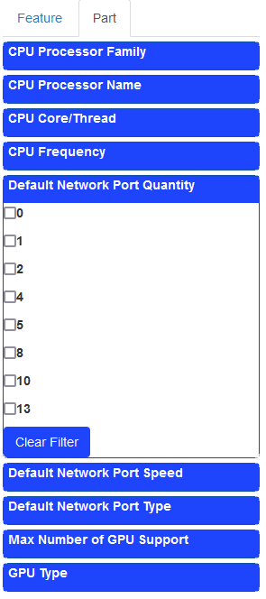
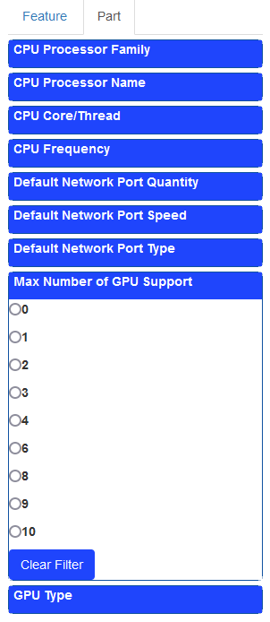

The configurator has a vast filter network that offers a variety of options to choose from. This is separated into two main categories that consist of "Feature" and "Part." Here we will cover the Part filter category that consists of 9 sub-categories ranging from the CPU processor family to the GPU type.
The Part filtration is an effective tool to narrow the search for compatible systems. When searching for a CPU, one can utilize the CPU Processor Family, Processor Name, Core/Thread, and Frequency subcategories. The processor family filter provides a wide variety of popular CPU families used in our servers such as Intel Core i-Series and Xeon CPUs to AMD Milan and Rome CPUs. Similarly, the CPU Frequency and Core/Thread categories provide a wide search, but instead allows one to compare CPUs that have similar specifications across different generations.
These three provide a large number of systems that are compatible with the filter applied. On the other hand, if the specific CPU is known, we have a filter option called the Processor Name. It provides an extensive list of the current validated CPUs we have here at Supermicro, and selecting one will provide all the systems that support that specific CPU.
The next set of sub-categories focus on the default network ports that are provided with the servers.
The default network port quantity allows users to select the number of ports that are included with the system, while the port type will filter based on the form factor of the network port such as RJ45 or SFP. The default network port speed provides the base port speed such as 1Gb or 10Gb that the system houses innately. In order to add more ports or select a network controller that has a faster speed , it can be added during the AOC step when configuring a system.
The last set of sub-categories focus on the GPU options that we provide.
The filters allow users to select systems that not only cater to the number of GPUs within a system, but also the form factor of that GPU as well. Selecting the max number of GPU Support focuses on the number of GPUs included while the GPU Type differentiates the different GPU form factors available. GPUs follow a more complex set of rules when adding them to our systems. There can be concerns that range from thermals, physical size, wattage, and system validation. If there are any issues when adding GPUs it is recommended to contact our LiveChat support team or respective sales representatives who will be able to gather information to answer your questions. You are welcome to visit the Supermicro Configurator Tool to create the next server for your needs.